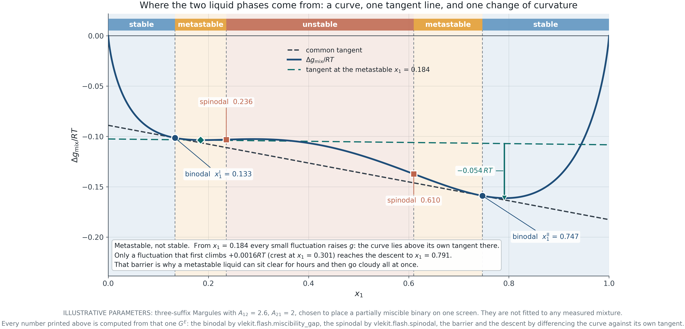
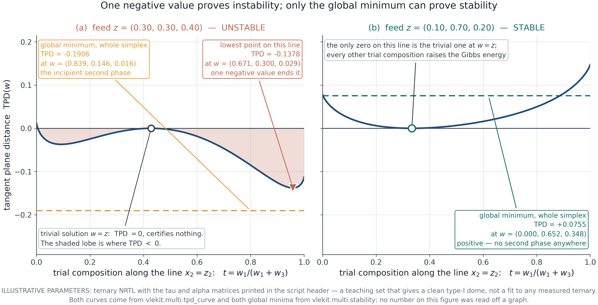
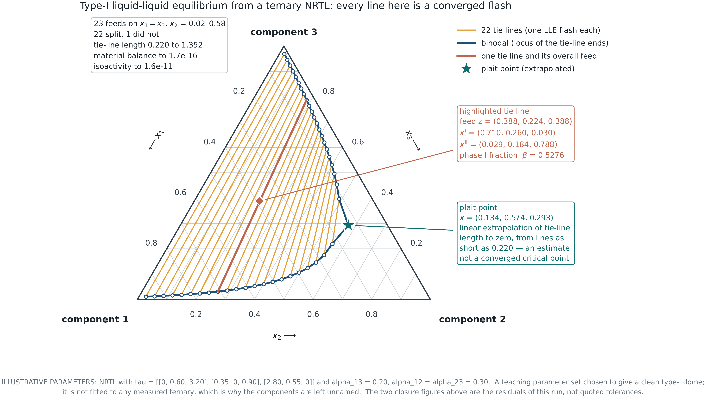
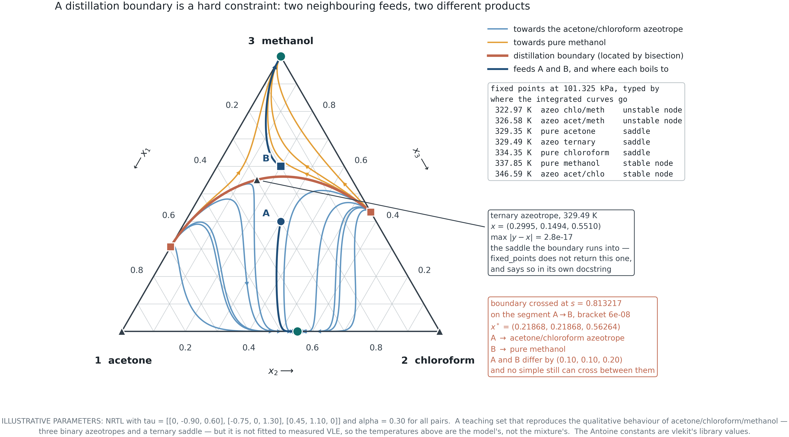
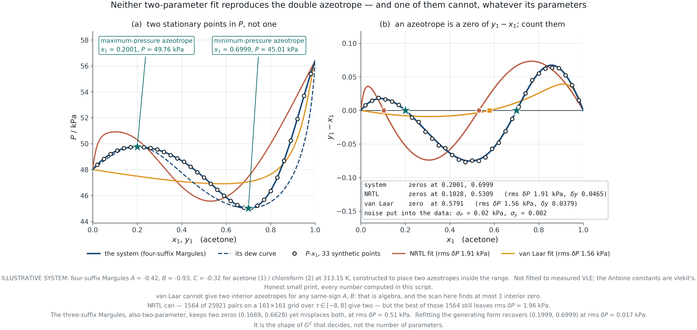
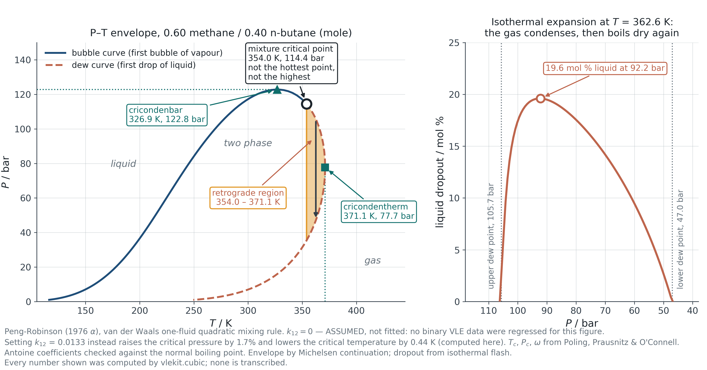

Module 5 · 2105603 Advanced Chemical Engineering Thermodynamics
9 August 2026
Convergence is not correctness.
A flash calculation solves the equations it was given.
It does not check that they were the right equations.
Introduction
Module 4 ended with a flash that had no way of noticing it was solving the wrong problem. This module supplies the missing test, and then follows the consequences.
The callback
Module 1 introduced mechanical stability for a pure fluid through the spinodal — the locus where (\partial P/\partial V)_T = 0 and the fluid can no longer resist a density fluctuation.
This module is the same idea in composition space, where it becomes the tangent plane criterion.
Four questions
PART I
Section 5.1 One curve, one tangent line, and one change of curvature.
Everything about a binary split is in that picture.
5.1 · Stability from the Gibbs energy of mixing
Mixing is entropically favourable. A split needs the energetic term to defeat that, and it can only do so over part of the range.
\frac{\Delta g_{\rm mix}}{RT} = \underbrace{x_1\ln x_1 + x_2\ln x_2}_{\text{ideal, always convex}} \; + \; \underbrace{\frac{G^E}{RT}}_{\text{can be concave}}
The competition
The ideal part is convex everywhere and has infinite slope at both ends, which is why a little of anything always dissolves. A split therefore never reaches the pure vertices.
The threshold
For the symmetric case G^E/RT = A x_1 x_2, the curve first loses convexity at A = 2, at x_1 = \tfrac12. Below that value no parameter combination can produce two phases; above it, the gap opens from the middle outwards.
5.1 · Stability from the Gibbs energy of mixing

F5.1 · Binodal from the common tangent, spinodal from the change of curvature, and the metastable band between them.
5.1 · Stability from the Gibbs energy of mixing
Between the binodal and the spinodal a liquid is stable against small fluctuations and unstable against large ones.
Unstable
Inside the spinodal, \mathrm{d}^2\Delta g/\mathrm{d}x_1^2 < 0. Any fluctuation, however small, lowers the Gibbs energy. Separation begins everywhere at once and needs no nucleus.
Metastable
Between binodal and spinodal the curve lies above its own local tangent nearby, so a small fluctuation is resisted. In the case on the previous slide the barrier is +0.0016\,RT and the eventual descent is -0.054\,RT: a thirty-fold reward, behind a small wall.
Why it matters
A metastable liquid can sit clear for hours and then go cloudy all at once when a nucleus appears. Emulsions, supersaturated solutions and polymer blends all live in this band, and a design that assumes equilibrium will be surprised.
PART II
Section 5.2 The common tangent works for a binary because a tangent is a line.
For three components it is a plane, and for more it cannot be drawn at all.
5.2 · Tangent plane distance
Michelsen: a phase is stable if and only if the tangent plane distance is non-negative for every trial composition.
\mathrm{TPD}(\mathbf{w}) = \sum_i w_i\left[\ln w_i + \ln\gamma_i(\mathbf{w}) - \ln z_i - \ln\gamma_i(\mathbf{z})\right]
What it measures
The vertical distance from the Gibbs energy surface at the trial composition \mathbf{w} down to the plane tangent to that surface at the feed \mathbf{z}. Negative means some other phase lies below the plane, so the feed is not the global minimum.
The asymmetry
One negative value anywhere proves instability. Proving stability requires the global minimum over the whole composition space — a much harder claim, and the reason stability analysis is a research topic rather than a formula.
5.2 · Tangent plane distance

F5.2 · The same criterion on an unstable and a stable feed. Note that the drawn line is a slice: the global minimum of the unstable case lies off it.
5.2 · Tangent plane distance
\mathbf{w} = \mathbf{z} gives \mathrm{TPD} = 0 exactly, for every feed, stable or not. It is a stationary point and it certifies nothing.
The trap
Start the minimisation at the feed and it will sit there, return zero, and report stability. The answer looks like a converged calculation because it is one.
The remedy
Start near each pure component, and from the feed pushed halfway toward each vertex. Discard any converged trial phase that has come back to the feed. This is Michelsen’s recommendation and it is what the course code does.
Where it is used
Stability analysis runs before the flash, not after. The trial phase it returns is also the best available initial estimate for the flash that follows, so the test pays for itself.
PART III
Section 5.3 What a split looks like when there are three components,
and which models can produce one at all.
5.3 · Liquid-liquid and vapour-liquid-liquid equilibrium

F5.3 · Type-I dome from a ternary NRTL. Every tie line is a converged flash; the plait point is an extrapolation and is labelled as one.
5.3 · Liquid-liquid and vapour-liquid-liquid equilibrium
This is a property of the functional form, argued from the G^E introduced in Module 3 — not a matter of finding better parameters.
Wilson
\frac{G^E}{RT} = -\sum_i x_i \ln\!\Big(\sum_j \Lambda_{ij} x_j\Big)
The form cannot make \Delta g_{\rm mix} lose convexity for any positive \Lambda. A sweep over thirty-six binary parameter pairs and twelve random ternary matrices produces no split — ever.
NRTL
The local-composition weighting G_{ij} = \exp(-\alpha\tau_{ij}) gives the model a second scale, and with it the ability to make G^E large and asymmetric enough to defeat the entropy of mixing. This is why every published LLE correlation uses NRTL or UNIQUAC and none uses Wilson.
Module 4 met the same limitation from the other side: fitted to a system that does split, Wilson bought the fit with an infinite-dilution activity coefficient of about twenty thousand. The absurd number was the symptom; this is the cause.
5.3 · Liquid-liquid and vapour-liquid-liquid equilibrium
Vapour over two liquids is common in practice — steam distillation, azeotropic drying, any decanter on a column overhead.
F = C - \pi + 2
| System | C | \pi | F | What is left free |
|---|---|---|---|---|
| Binary VLE | 2 | 2 | 2 | T and P, or T and x_1 |
| Binary VLLE | 2 | 3 | 1 | Fix P and everything else is determined |
| Ternary LLE | 3 | 2 | 3 | T, P and one composition |
| Ternary VLLE | 3 | 3 | 2 | T and P; all compositions follow |
Binary VLLE at fixed pressure has no remaining freedom: the temperature and all three compositions are fixed by the system. That is why a heterogeneous azeotrope boils at a single reproducible temperature.
5.3 · Liquid-liquid and vapour-liquid-liquid equilibrium
The extrapolation warning from Module 4, in its most expensive form.
Why it fails
VLE data constrain G^E mainly through its first derivative, over the composition range measured. A phase split is governed by the second derivative, often in a range where no VLE data exist. A parameter set can reproduce every measured bubble pressure and be wrong about whether the liquid splits at all.
What to do
If the answer depends on the split, fit LLE data — mutual solubilities are cheap to measure and pin the second derivative directly. Where both matter, fit both together and report the compromise. Never present a VLE-fitted split as a prediction without saying which data it rests on.
PART IV
Section 5.4 What all of this costs a separation designer.
5.4 · Azeotropy, distillation boundaries and critical behaviour
Homogeneous and heterogeneous. The difference is worth money.
Homogeneous
One liquid phase at the azeotropic composition. y_i = x_i, no further separation by ordinary distillation, and no way around it without changing the pressure or adding an entrainer.
Heterogeneous
The azeotropic liquid is inside a miscibility gap, so the condensate splits in a decanter into two liquids of different composition — neither of which is the azeotrope. The split does the separation that distillation could not, and each layer is returned to a different column.
That is the industrial route for ethanol dehydration and for drying solvents with an entrainer.
5.4 · Azeotropy, distillation boundaries and critical behaviour

F5.4 · Residue curve map. The boundary was located by bisecting between two feeds until the end node flipped, not drawn by hand.
5.4 · Azeotropy, distillation boundaries and critical behaviour
The boundary on the previous slide runs into a ternary azeotrope — a fixed point that involves all three components at once.
Why it is hard to find
The course code searches every binary edge for azeotropes by sign change, which is reliable because each edge is one-dimensional. A ternary azeotrope sits in the interior, where a sign-change scan does not generalise; finding it reliably needs a homotopy method. The code says so in its own docstring rather than returning a list that quietly misses one.
Why it matters
Interior fixed points are usually saddles, and saddles are where boundaries terminate. Miss one and the topology of the map is wrong — which means the predicted set of reachable products is wrong.
For this system it sits at x = (0.30, 0.15, 0.55) and 329.5 K, where \max|y_i - x_i| = 3\times10^{-17}.
5.4 · Azeotropy, distillation boundaries and critical behaviour

The received version is wrong
It is usually said that a two-parameter model cannot produce a double azeotrope. Van Laar indeed cannot — for same-sign parameters its \ln(\gamma_1/\gamma_2) has exactly one interior zero. But NRTL can, and so can the two-parameter three-suffix Margules.
What decides it
The shape of G^E, not the number of parameters. Here neither fitted two-parameter model reproduces the second azeotrope: NRTL misplaces both zeros and leaves an rms error a hundred times the noise.
F5.6 · An illustrative double azeotrope, with two fitted two-parameter models failing to reproduce it.
5.4 · Azeotropy, distillation boundaries and critical behaviour

F5.5 · Peng-Robinson envelope for a light/heavy pair. Critical point, cricondentherm and cricondenbar are all different points. k_{ij} = 0, assumed and labelled.
5.4 · Azeotropy, distillation boundaries and critical behaviour
Drop the pressure at constant temperature and liquid appears. Then keep dropping and it evaporates again.
Why it happens
Between the critical temperature and the cricondentherm the dew curve is crossed twice at one temperature. Expanding from high pressure the mixture enters the two-phase region through the upper dew point, drops out liquid, and leaves again through the lower one.
Why it costs money
Gas-condensate reservoirs sit in exactly this region. As the reservoir is produced its pressure falls and valuable heavy hydrocarbons condense in the pore space, where they are largely unrecoverable. Field development plans are built around keeping the pressure above the dew point.
Closing
The module in six statements.